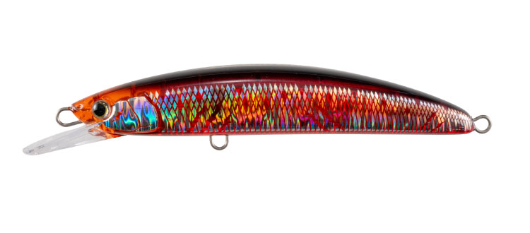
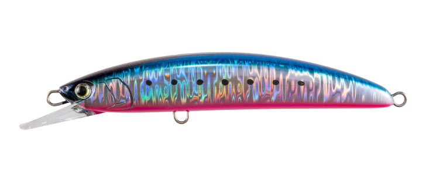
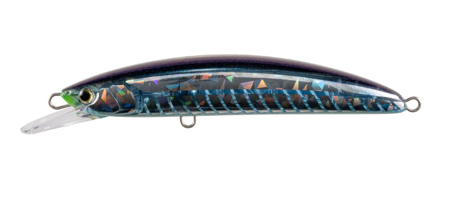
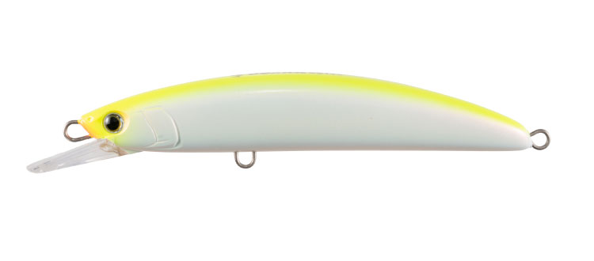

ボアーSS145
（BOAR SS145）
ボアーSS145はマリア（maria）のジャーキングミノーです。
「荒磯を制す！」をコンセプトにしたロックショア青物専用モデルのダウンサイズ版。PE3号クラス対応で扱いやすくなったサイズに、左右へのスライドダートと水平ステイで捕食のスイッチを入れる機構を搭載しているのが最大の魅力です。

画像出典:maria公式HP
スペック
- メーカー
- maria（マリア）
- タイプ
- ジャーキングミノー（スローシンキング）
- 全長
- 145mm
- 自重
- 50g
- フック
- トリプル太軸#1/0
- リング
- ファイターズリングダエン#6
- 対応ライン
- PE3号クラス
- ターゲット
- ロックショア青物（ヒラマサ・ブリ等）
- 発売
- 2026年9月上旬
▼今すぐチェック

ボアーSS145の特徴
荒磯を制す青物専用設計を、扱いやすいPE3号クラスにダウンサイズ
-
スライドダート＋水平ステイで捕食のスイッチを入れる
ジャークで左右に大きくスライドダートし、ポーズで水平ステイを取る。このメリハリのある動きが青物の捕食スイッチを入れる設計。
-
マグネット重心移動で向かい風でも飛距離を確保
キャスト時はマグネット式の重心移動システムが働き、向かい風の中でも安定した飛行姿勢と飛距離を実現。ロックショアの強風下でも扱いやすい。
-
PE3号クラス対応のダウンサイズでライトタックルでも扱える
上位モデルより軽いタックルで扱える設計のため、ロックショアゲームの入門用やサブウェポンとしても持ち出しやすい。
ボアーSS145の使い方
基本はジャーク&ステイ。ロッドを強めにジャークしてスライドダートを出し、ポーズで水平ステイを取って見切らせる間を作る。このリズムの繰り返しが基本の組み立てです。
青物が見えている状況では、ジャークのテンポを上げて追わせる動きを演出し、見えていない時はステイの時間を長く取ってじっくりアピールするなど、状況に応じてメリハリを調整していきます。
ボアーSS145の得意な状況
荒磯や堤防先端など、ロックショアから青物のナブラやボイルを狙う状況が最大の出番。
向かい風が強い状況でも飛距離を確保できるため、風が強いロックショアのコンディションでも選びやすい。PE3号クラスのライトタックルで青物ゲームに挑みたい場面にも向いている1本です。
ワンポイント
追ってくるが食い切らない時は、ステイの時間を一瞬長くして見切らせないタイミングを作ると、バイトにつながりやすくなります。
風が強い日は、マグネット重心移動の恩恵を活かすため、しっかりロッドを振り切ってキャストすると飛距離が安定します。
オススメカラー
ボアーSS145は全8色展開。ロックショアの状況に合わせやすいオススメカラーを厳選して紹介します。

血みどろマズメ時や濁り潮に強い高アピールなレッド系カラー。

ブルピンイワシイワシパターンにマッチするナチュラル系カラー。デイゲームで使いやすい。

ケイムラスリットグローケイムラとグローを組み合わせた、早朝や薄暗い時間帯向けのカラー。

チャートパール濁り潮やローライト時でも視認性を確保できる高アピールカラー。
画像出典:maria公式HP
ボアーSS145に似ているルアー
-
 ネッサ ウィングビーム80HS
シマノ
詳細はこちら＞
ネッサ ウィングビーム80HS
シマノ
詳細はこちら＞
ヘビーシンキングタイプで飛距離を重視した設計。遠投して青物やフラットフィッシュを狙う考え方がボアーSS145と近い。
-
 フリッド125S
ブルーブルー
詳細はこちら＞
フリッド125S
ブルーブルー
詳細はこちら＞
後方重心で高速フォールとハッキリした引き抵抗を出すシンキングペンシル。ジャーク主体で使う点がボアーSS145と共通する。